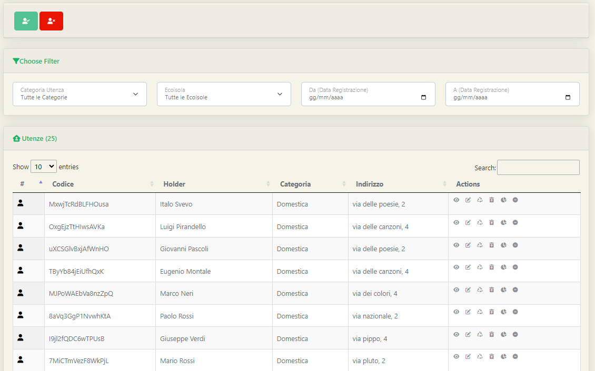
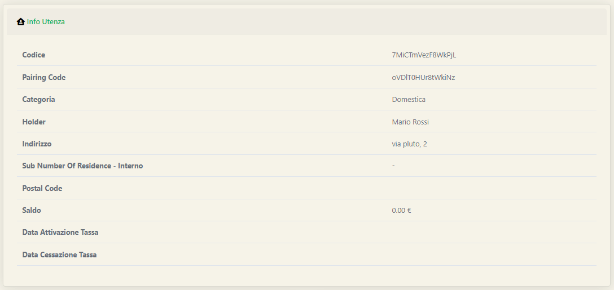
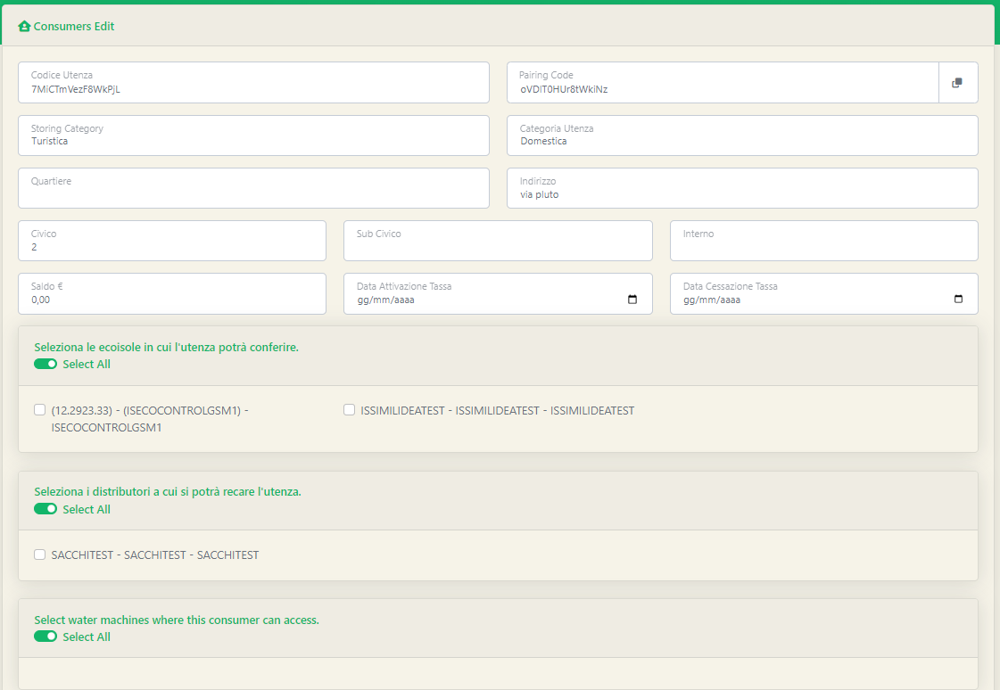
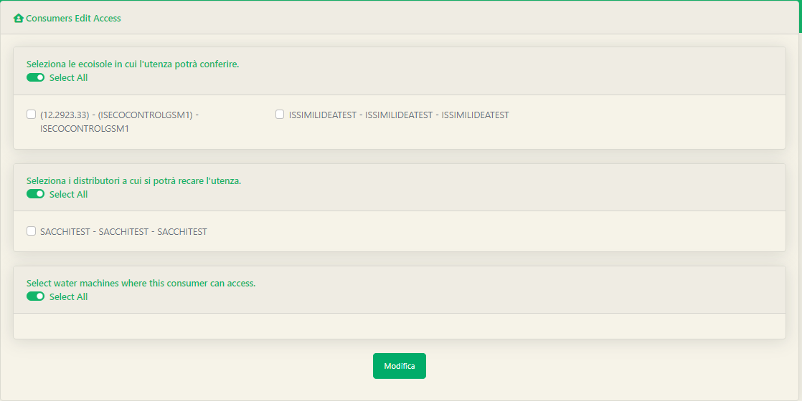
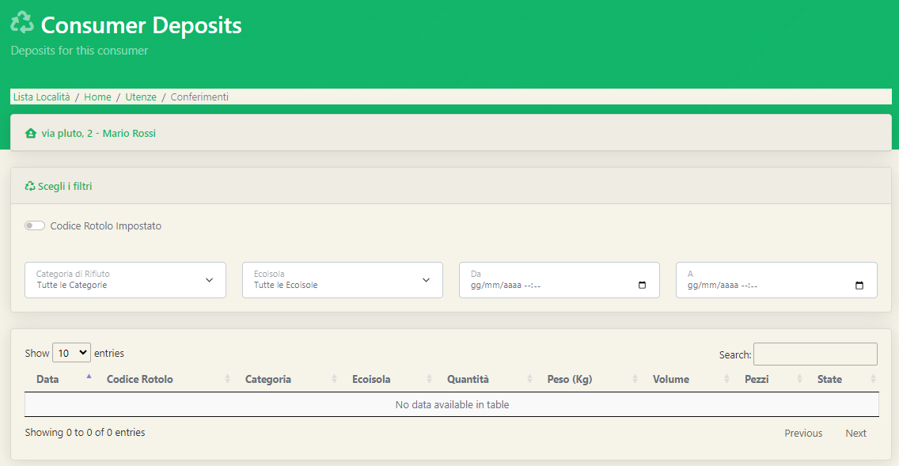
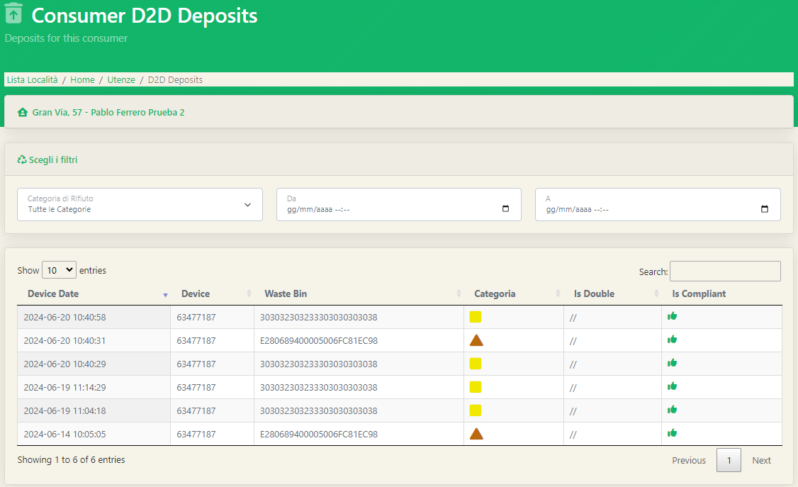
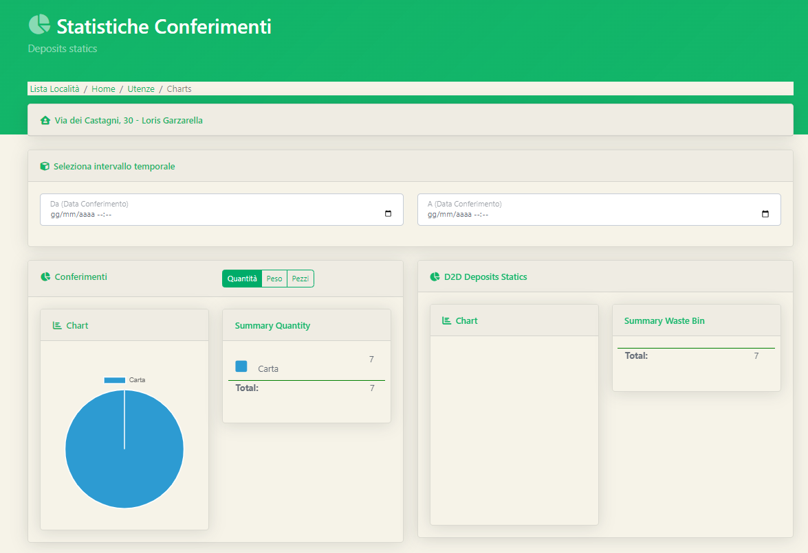
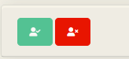
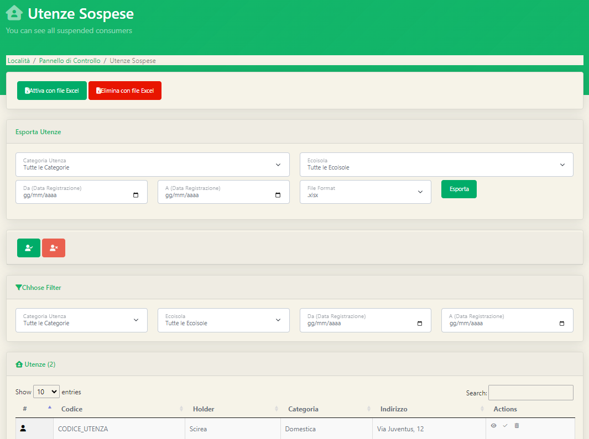

Rimanendo sulla schermata delle utenze, possiamo notare come all'interno della tabella di visualizzazione delle utenze, per ciascuna utenza, è possibile svolgere determinate azioni.  In ordine, nella colonna 'Actions' troveremo le seguenti azioni:
E' la prima delle azioni che possiamo svolgere sulle utenze. L'apposita finestra con il riepilogo dei dati sulle utenze si aprirà una volta che avremo cliccato sull'icona dell'occhio all'interno della colonna Actions. La schermata che l'amministratore visualizzerà sarà la seguente:  In tale schermata non sarà possibile la modifica delle informazioni descritte.
La seconda azione eseguibile sulle utenze, si articola poi in 4 sottosezioni diverse come modifica informazioni, utenti, accessi e circuiti.
La schermata di modifica informazioni è molto simile a quella precedente vista per la visualizzazione delle informazioni; tuttavia, in questo caso tutti i campi saranno editabili.  L'utente potrà modificare tutte le informazioni relative alla "casa" ma non quelle relative agli utenti presenti all'interno.
All'interno della sezione modifica utenti, l'amministratore potrà svolgere due funzioni importanti per la gestione dei componenti di un nucleo familiare:
Nella parte superiore della pagina l'amministratore troverà i campi necessari che, una volta compilati, permetteranno cliccando sul tasto verde Aggiungi di aggiungere un utente a quella specifica utenza. Nella parte inferiore invece, avremo una schermata di riepilogo di tutti gli utenti presenti all'interno dell'utenza, con la possibilità di eliminarne uno o più semplicemente cliccando sull'icona del cestino all'interno della colonna 'Actions'. E' possibile inoltre per ogni utente:
All'interno della schermata di modifica accessi l'amministratore può nuovamente definire a quali ecoisole/distributori/distributori d'acqua l'utenza sarà autorizzata. E' possibile cambiare le preferenze semplicemente cliccando sul nome della macchina che si intende autorizzare o meno. 
Nell'ultima sezione della modifica è possibile andare ad interagire con i circuiti di premialità a cui partecipa una determinata utenza. Il concetto dei circuiti di premialità verrà successivamente ripreso in una sezione dedicata.
Tornando nella schermata delle utenze e, in particolare, alle azioni che possiamo svolgere su un'utenza passiamo alla terza voce disponibile nella colonna Actions ovvero i conferimenti. Cliccando sul simbolo del riciclo, l'amministratore accederà alla sezione dei conferimenti che verrà automaticamente filtrata per l'utenza in questione. La schermata sarà la seguente:  Sarà possibile inoltre filtrare i conferimenti per categoria di rifiuto, ecoisola e per data.
Waper Web permette di gestire anche i conferimenti eseguiti con il porta a porta, mediante l'utilizzo di dispositivi RFID utilizzati per leggere appositi tag all'interno dei mastelli. La funzionalità Conferimenti D2D (Door To Door) permette, analogamente alla schermata precedente, di visualizzare già filtrati i conferimenti porta a porta di un'utenza.  All'interno della tabella potremmo notare:
La quinta voce presente nella sezione delle azioni riguarda le statistiche dell'utenza. La schermata delle statistiche fornisce diversi grafici a torta utili per determinare la quantità di materiale conferito da una determinata utenza; risulta utile anche per capire qual è la frazione di rifiuto maggiormente conferita dall'utente. 
L'ultima voce delle azioni che è possibile svolgere su un'utenza riguarda la sospensione di un'utenza. Un'utenza può essere sospesa e a cascata verranno sospesi tutti gli utenti all'interno di essa. Una volta cliccato sull'apposito tasto per sospendere l'utenza potremmo visualizzare l'utenza appena sospesa all'interno dell'apposita schermata raggiungibile cliccando il tasto rosso presente nella pagina delle utenze:  Dopo il click, la pagina visualizzata sarà la seguente: 
La schermata che ci si presenterà sarà molto simile a quella vista con le utenze ma in questo caso le uniche azioni che potremmo svolgere sulle utenze sono: